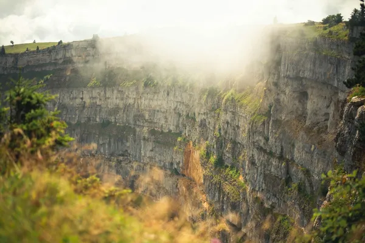

Home › Spirits › Val-de-Travers
Val-de-Travers: Absinthe

Photo: Nico Meier on Unsplash
This Swiss valley is the birthplace of absinthe in the late 1700s; it was banned in Switzerland in 1910 and legal again from 2005.
How it's made
Wormwood, green anise and fennel are macerated and distilled. Swiss 'la bleue' is clear; others are coloured green with herbs.
Grande wormwood, green anise and Florence fennel, often with local herbs, are macerated in alcohol and then distilled. Swiss 'La Bleue' is bottled clear straight from the still; green absinthes are coloured afterwards by steeping more herbs.
History
Absinthe was first made in the Val-de-Travers, in Couvet, in the late 1700s, and the Pernod family later built it into an industry in nearby Pontarlier in France. Switzerland banned it in 1910, distillers kept making it secretly for nearly a century, and it became legal again in 2005.
Ageing and label terms
Absinthe is not aged in oak. A clear 'blanche' or 'bleue' is bottled after distillation, while a 'verte' rests briefly with herbs for its colour.
Styles
The valley is known for clear La Bleue, but green absinthes are also made. Strengths are high, often 50–72% ABV.
Rules and protected names
'Absinthe' and 'La Bleue' have been protected geographical indications in Switzerland since 2014, limited to products from the Val-de-Travers. Thujone, a compound in wormwood, is limited by law.
How to serve and classic cocktails
Pour a measure into a glass and slowly drip 3–5 parts ice-cold water over it, with a sugar cube on a slotted spoon if you like; it clouds as it dilutes. A dash is also used in the Sazerac and the Corpse Reviver No. 2.
With food
Best as an aperitif; it also goes with goat's cheese, fennel salads and anise-spiced desserts.
Good to know
The 'green fairy' reputation for causing hallucinations is a myth; modern absinthe is simply a very strong herbal spirit, so dilute it well.
Producers
- Kübler
- La Clandestine
Bottles to try
La Clandestine Absinthe
Anise, fennel, mint and soft floral herbs.
Strength: 53% · Age and cask: Unaged
A clear 'bleue' absinthe from Couvet in the Val-de-Travers, based on a recipe from the time when absinthe was banned in Switzerland (1910–2005) and made in secret.
Serve: With cold water dripped slowly over it until cloudy
Kübler Absinthe
Clear and fresh: anise, fennel, mint and grassy wormwood, turning cloudy with water.
Strength: 53% · Age and cask: Unaged
The Kübler family started distilling absinthe in Môtiers in the Val-de-Travers in 1863. When Switzerland lifted its absinthe ban in 2005, Kübler was among the first to bring a legal Swiss absinthe back to market.
Serve: Diluted with three to five parts iced water, poured slowly
More anise & others regions
Explore all spirits in the interactive guide
The Wine Reference newsletter
New wines, stories and career guides, one email a week at most.
Over 18s only. Unsubscribe any time with one click. Your email is stored securely by Kit and never shared.
Support The Wine Reference
This guide is free, with no paywall. If it helped you choose a bottle, you can buy me a glass and keep it growing.
🍷 Buy me a glass